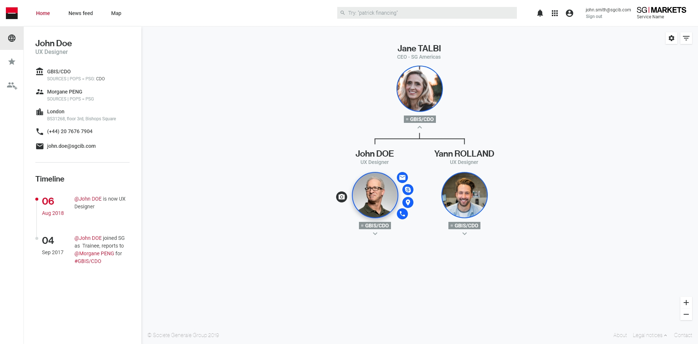

The UX designer's role in Societe Generale CIB is to simplify what is complicated, but to leave the right level of business complexity to the expert user. For over 4.5 years, I have been involved in 10+ projects and performed the role. Here my three short-listed case studies which can describe my projects briefly.
1. An intuitive org chart for internal users: SG Markets Org Chart
Problem defined
In Societe Generale, which is a global corporation with around 150,000 employees around the world, it was not easy to search and find the information about others in the group.
"When I first joined, I didn't know anyone and had no idea who I should contact if the only person I knew in the team was not there." (Product Owner, explaining why he kicked-off this side project)
Timeline: 6 months
Design solution
An intuitive org chart and single directory for all the global employees, called SG Markets Org Chart
Keys

An agile and small product team
It started from a small team: one UX designer from London (myself), one Product owner from Hong Kong and one software engineer from New York. This small team enabled us to be more productive and collaborative in this large corporation.

Easy to browse and search quickly
We discovered that employees do like to browse others in different teams, departments or countries, especially when they kick-off any new project or collaboration. To make it smooth and intuitive, we implemented the same interaction like Google Map based on the benchmark analysis.

Useful features specifically for corporate needs
We focused on users' behaviour such as searching others when we started a new project with other teams or checking who are their reporting lines. Also, there are many 'project teams' across multiple departments and teams. Thus, users want to see their 'project teams' at one glance, although they're all apart.
Interaction design process • Which questions do I have in my brain while designing the interaction of a new feature?

Outcomes
- No.1 numbers of users in SG Markets platform
- A single internal service widely used by avg 9,000 daily visits from 20 countries
- Higest user satisfaction in SG Markets (4.58 out of 5, total 295 responses so far)
2. A traversal widget redesign: Help center
Problem defined
Previous widget for Help center was too small to be found easily and not consistent with other widgets, 'My services' and 'My account'. Also, it was short of space to display sufficient amount of information, which had resulted in low readability.
Timeline: 3 months
Design solution
A redesigned Help center widget by improving visibility, consistency and readability
Keys

Smooth and transparent internal communication
Since all the services in SG Markets platform would be impacted by this redesign, I had communicated with many UX designers, Product Owners, stakeholders and engineers than any other projects. Smooth and transparent communication could reduce the silo and technical debt.


Scalable design that can be iterated quickly in the near future
When we first started this project, a Product Owner had so many features in mind in heavy contents of ppt slides. However, I facilitated him to prioritise the most important features into MVP and started from small to be easily scalable. For instance, we designed and developed from the directory of FAQs and pushed it to the production first. Then, while gathering feedback from users, we iterated to add an additional feature, 'Instant feedback', which users can quickly rate the service with stars.
Outcomes
- The new Help center was updated across all services in SG Markets at once, which reduced the development cost.
- User feedback after production has been positive enough to prioritise the next feature, 'Instant feedback'.
- The usage of Help center from services has highly increased.
3. Improving and migrating multiple legacy tools into a unified new service: SG Markets Prime
Problem defined
For Prime services in Societe Generale, there had been multiple legacy tools divided by user profiles (external clients or internal operational employees) and departments (MARK or GBSU), etc. This cumbersome diversion had confused users and consequently the overall satisfaction was very low.
Timeline: 12 months - ing
Design solution
A single unified service, SG Markets Prime, which would satisfy user needs of both internal and external users

Keys

Including various profiles of business people in our design process
It became clear that when people weren't invested in the outcome, they didn't feel like they were part of the team. So, we decided we wouldn't start a new design project until everyone agreed on the objectives. We also wanted to make sure there were no irrefutable assumptions going into the project - we always use our tools and methodologies to determine what's relevant to the user, which is what matters most.


Implementation of suitable user research methods: Co-design workshop, user survey, usability testing, focus group, etc.
All these user research methods were led by myself and implemented remotely. I love to analyse qualitative and quantitative results from the research and visualise them into design. We could simplify a lot of complicated repetitive data in co-design workshops, decide a global layout and order of contents on Homepage based on the user survey, tested our design with usability questionnaire and confirmed the business values through series of focus groups.
Outcomes
Design and development still in progress - looking forward to measuring the UX metrics after production soon!